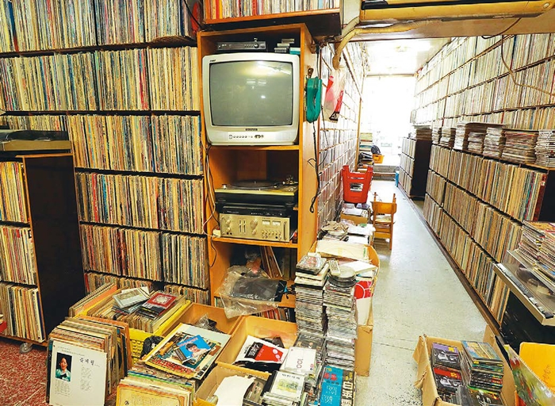

돌레코드
돌레코드
위치 : 서울 중구 마장로9길 49-29
운영 시간 : 10:00~21:00
무엇이 있나요?
청계8가 황학동 벼룩시장 인근의 돌레코드는 음반 애호가들에게는 너무나 유명한 곳입니다.
왠만한 음반수집가, 유명 연주인, 대중음악 관계자치고 한번쯤 돌레코드를 다녀가지 않은 사람이 없다고 할 정도니까요.
20만장이 넘을 것으로 ‘추산’되는 각종 장르의 음반은 그 자체로 하나의 거대한 라이브러리를 이루고 있답니다.
#엘피판
#음반
